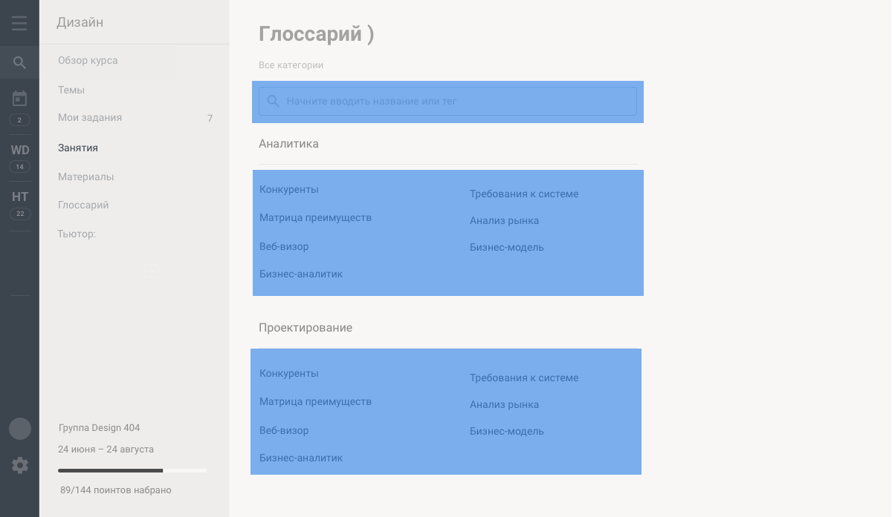

<figure> <a href='null.html' style='cursor: pointer; position: absolute; display: block; background-color: rgba(0,150,255,0.5); opacity:0;left: 339px; top: 109px; width: 527px; height: 57px'></a>,<a href='null.html' style='cursor: pointer; position: absolute; display: block; background-color: rgba(0,150,255,0.5); opacity:0;left: 340px; top: 229px; width: 526px; height: 170px'></a>,<a href='null.html' style='cursor: pointer; position: absolute; display: block; background-color: rgba(0,150,255,0.5); opacity:0;left: 337px; top: 470px; width: 526px; height: 170px'></a>,<a href='course.html' style='cursor: pointer; position: absolute; display: block; background-color: rgba(0,150,255,0.5); opacity:0;left: 67px; top: 61px; width: 221.99999999999997px; height: 35px'></a>,<a href='course__blocks.html' style='cursor: pointer; position: absolute; display: block; background-color: rgba(0,150,255,0.5); opacity:0;left: 67px; top: 104px; width: 221.99999999999997px; height: 36px'></a>,<a href='course__mytasks.html' style='cursor: pointer; position: absolute; display: block; background-color: rgba(0,150,255,0.5); opacity:0;left: 67px; top: 149px; width: 221.99999999999997px; height: 34px'></a>,<a href='course__lessons.html' style='cursor: pointer; position: absolute; display: block; background-color: rgba(0,150,255,0.5); opacity:0;left: 67px; top: 188px; width: 221.99999999999997px; height: 33px'></a>,<a href='course__block__documents.html' style='cursor: pointer; position: absolute; display: block; background-color: rgba(0,150,255,0.5); opacity:0;left: 67px; top: 225px; width: 221.99999999999997px; height: 32px'></a>,<a href='glossary.html' style='cursor: pointer; position: absolute; display: block; background-color: rgba(0,150,255,0.5); opacity:0;left: 67px; top: 262px; width: 221.99999999999997px; height: 33px'></a></figure><footer><style> body {padding:0; margin:0; text-align: center} figure {  box-shadow: 0px 0px 40px 3px rgba(200,200,200,0.8); display: inline-block; position: relative; padding: 0px; margin: 0px}</style></footer>